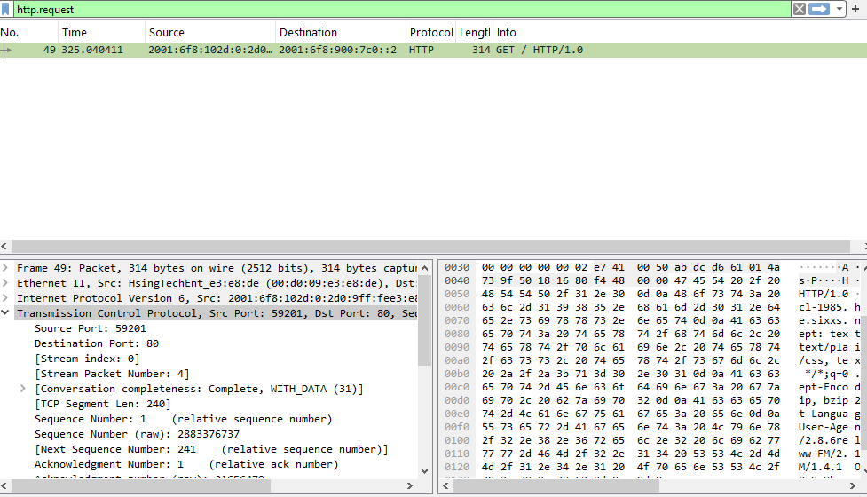
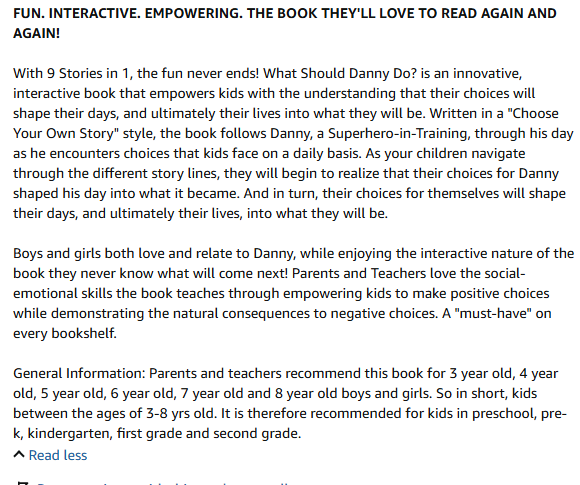

Lab 02: Network Traffic Analysis & Cleartext HTTP Stream Reconstruction
- Date: October 2026
- Category: Network Security & Packet Forensics
- Framework Mapping: MITRE ATT&CK [T1071.001 - Web Protocols] / [TA0011 - Command and Control]
- Tooling: Wireshark, Protocol Hierarchy, TCP Stream Analysis
1. Executive Summary & Objective
Network telemetry provides an objective source of truth during defensive triage, exposing external communications even if endpoint logs are absent or purged.
The objective of this lab was to triage a packet capture (.cap), identify active layer-3 and layer-4 conversations across modern IPv6 infrastructure, isolate unencrypted application-layer requests, and reconstruct the full bidirectional TCP session to extract key forensic indicators.
2. Triage Methodology
- Endpoint & Protocol Enumeration:
- Evaluated the global protocol distribution using Wireshark Protocol Hierarchy.
- Identified active communication channels via the IPv6 Endpoints table.
- Display Filter Application:
- Applied the display filter
http.requestto isolate client-initiated web requests from transport-layer overhead. - Layer 7 Stream Reconstruction:
- Reconstructed the complete conversational flow using Follow TCP Stream to inspect request headers and server responses.
3. Forensic Evidence & Packet Inspection
Telemetry Overview: HTTP Request Frame Isolation

Reconstructed Application Layer Stream (TCP Stream)

Key Artifact Breakdown:
- Frame ID:
49 - Protocol:
HTTP/1.0 - Source IP (Client):
2001:6f8:102d:0:2d0:9ff:fee3:e8de - Destination IP (Host):
2001:6f8:900:7c0::2 - Destination Port:
80(Standard HTTP) - Source Port:
59201(Ephemeral Client Port) - Host Header:
cl-1985.ham-01.de.sixxs.net - User-Agent:
Lynx/2.8.6rel.2 libwww-FM/2.14 SSL-MM/1.4.1 OpenSSL/0.9.8b - Response Code:
HTTP/1.1 200 OK(Apache Web Server)
Analytical Insight:
- Cleartext Visibility: Because the transaction occurred over unencrypted HTTP (port 80), all request headers, user agents, and response payloads are exposed.
- Client Fingerprinting: The User-Agent string identifies a terminal-based web browser (
Lynx), rather than a standard GUI browser like Chrome or Edge. In an enterprise environment, non-standard user agents originating from end-user workstations warrant immediate investigation as potential script execution or automated tooling. - Content Inspection: The server returned an open directory listing exposing downloadable files (
.pdf,.htm). In a real incident scenario, any retrieved binaries would be carved viaFile > Export Objects > HTTPand submitted for hash analysis.
4. Defensive Takeaways for SOC Triage
- Network Baselines: Modern enterprise web communications are overwhelmingly encrypted via TLS (port 443). Outbound cleartext HTTP (port 80) should be monitored and flagged for inspection.
- Full-Session Context: Individual packet inspection shows fragmented data; following the TCP stream reconstructs the entire conversational context needed for defensible incident reporting.